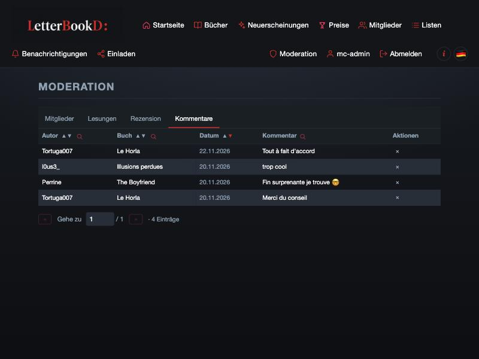

Moderation — Kommentare Nur Admin
Wozu es dient: Die verschachtelten Diskussionen unter den Rezensionen moderieren. Ein unangemessener Kommentar wird hier gezielt entfernt, ohne die übergeordnete Rezension oder die übrigen Antworten im Thread zu beeinträchtigen.

Ablauf
Tabelle: Autor (Name des Kommentierenden), Buch (Buch, dessen Rezension den Kommentar trägt), Datum, Kommentar (Auszug, sortier- und filterbar) und Aktionen (Kreuz zum Löschen). Die Löschung eines Kommentars ist atomar: Die übrigen Kommentare desselben Threads bleiben erhalten.
Aktionsketten
Jede Zeile beschreibt einen Auslöser in der Oberfläche, das sich öffnende Modal/Formular und den erzielten Effekt.
| Auslöser | Modal / Felder | Effekt |
|---|---|---|
| Sortier-/Filtersymbole (Lupe in der Spalte Kommentar) | — | Gleiche Mechanik. |
| Kreuz-Schaltfläche (×) in einer Zeile | Bestätigendes POST-Formular. | Löscht den Kommentar. Der Thread bleibt konsistent (keine Kaskadierung), und die übergeordnete Rezension ist nicht betroffen. |